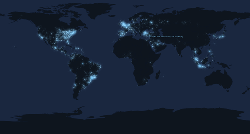
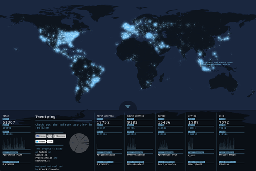

Thu, 31 Jan 2013 18:41:00 · tweet · twitter · tweetping · australia · sharing · hashtags
Everyone is busy tweeting... except in Australia.

What can Tweetping tells you about what the world tweets in real-time? Apparently quite a lot. And if you love big data, then this is the tool you’ll love.
But if you expect the neat simplicity of hashtags categorization adopted by Twitter in its early day, then you’re in for a disappointment. Tweetping clearly celebrate what Twitter is: the shouting of every connected humans on Earth.
What I found fascinating was not only the quick switch of popular hashtags and @mentions in milliseconds but also the obvious absent of particular area downunda, Australia. I couldn’t help but asked, are Australians simply not using Twitter that much or just have nothing interesting to shout to the world?

In the era where ‘over-sharing’ is considered almost normal, being in the opposite of that camp nearly sound implausible. I am not sure what this realtime tweets map could tell us. I mean, even people in Africa tweets a lot more. But if the notable absent of tweets in the southern hemisphere could be use a starting point of asking some fundamental questions of how people connects with each other, then you’ll likely begin to crave some semblance of deeper understanding.
Does lack of tweet in Australia means that people in downunda actually 'talk’ and 'hangout’ with each other in person? Or do Aussie simply not into Twitter that much? Time difference could also be a reason too…
Besides realizing that people in North America tweets just about everything in roughly one-tenth the amount of people in Africa, there’s not much information we can pull from this, err, map. Just think if we could add another layer of information to this map. Say something like colour mixing – each colour could have a whole chromatic language representing moods of a nation, for example. Anything you could analyze within language could definitely push this map further. Better yet, provide a customization tool that allows people to specify the kind of data can be visualized.
But of course that’s easier said than done, as every analysis takes time, and each analysis would likely pull you further from real time. We have no shortage of information. And I’m not sure if adding yet more ways of experiencing that information will improve the way we consume them.